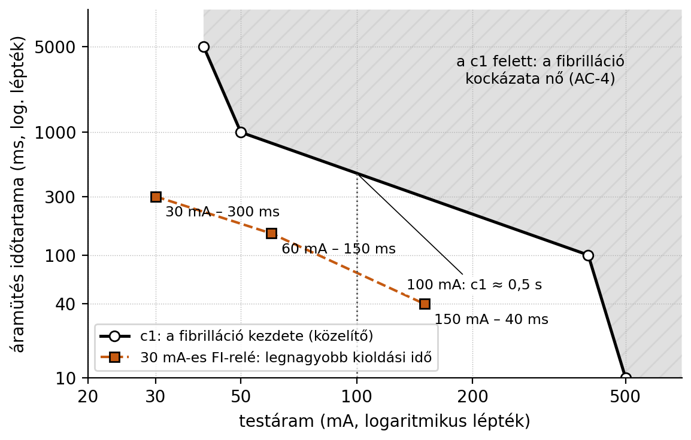

Villanyszerelőként gyakran dolgozol olyan közelben, ahol egy rossz mozdulat, egy hibás szigetelés vagy egy elmaradt feszültségmentesítés áramütéshez vezethet. Az áramütés nemcsak a sérültnek, hanem a segíteni akaró kollégának is életveszélyes, ha rossz sorrendben nyúl a helyzethez. Ebben az alfejezetben megtanulod, hogy mit okoz az emberi testben a villamos áram, miért éppen az áram és az idő együttese a döntő, és hogyan kell helyesen, biztonságosan elsősegélyt nyújtani áramütött személynek. Ez a tudás a munkahelyi biztonság és a emberi élet védelme miatt is kiemelt fontosságú.
Az áramütés legegyszerűbb modellje egy villamos kör: a hálózati feszültségforrás, a testen átfolyó áram, valamint a test és a föld felé vezető út ellenállása. Ha a kezeddel megérinted a feszültség alatti, hibás fémburkolatú készüléket, és a lábad a földön van, akkor az áram a kéz–törzs–láb útvonalon folyik keresztül.
A képen a forrás fázis felőli sarka a hibás fémházon és a testen () át, a másik, földelt sarka a földön át csatlakozik: a kör a testen keresztül záródik. A testen átfolyó áramot az Ohm-törvény adja meg:
ahol a testen megjelenő érintési feszültség, pedig az emberi test eredő ellenállása.
Definíció. Az érintési feszültség az a feszültség, amely az érinthető vezetőképes részek és a föld (vagy egyidejűleg érinthető más vezetőképes rész) között jelenhet meg, és amely hatására a testen áram folyhat át.
Megjegyzés. A test ellenállása nem állandó. A száraz, ép bőr ellenállása nagy, jellemzően 10–100 kΩ nagyságrendű, a nedves, izzadt vagy sérült bőr ellenállása viszont 1 kΩ alá is csökkenhet. A bőr alatti szövetek ellenállása már csak néhány száz ohm, ezért a bőrréteg az elsődleges védő ellenállás. Magasabb feszültség esetén a bőr átütődik, és az ellenállás lecsökken.
Példa. Két kézzel számolható alapeset mutatja meg, miért veszélyes a 230 V-os hálózat.
Számítás. Száraz bőrrel, , :
Ez a 2,3 mA körüli áram már érzékelhető, bizsergést, enyhe izomösszehúzódást okoz, de általában még nem önállóan életveszélyes.
Számítás. Ugyanaz a feszültség nedves, izzadt kézzel, esetén:
Ez már súlyosan károsító tartomány. Az áram izomgörcsöt, légzésbénulást és szívkamra-fibrillációt okozhat, különösen ha az áramütés időtartama meghaladja a néhány száz ezredmásodpercet.
Összefüggés. Az emberi testen átfolyó áram hatása nem csupán az áram nagyságától függ, hanem az áramütés időtartamától, az áram útjától, a frekvenciától és a test egyéni adottságaitól is. A villamos biztonságban ezért az áram–idő tartományokat használjuk.
Szabály. A váltakozó áramú, 50 Hz-es áramütésnél a tipikus hatások nagyságrendje:
Ezek a számok irányszámok, a pontos élettani határokat az IEC 60479 jellegű műszaki dokumentumok és a hatályos szabványok tartalmazzák (ellenőrizendő: aktuális IEC 60479 kiadás).
Törvény. Az áramütéses kockázat szempontjából a döntő mennyiség nem önmagában a feszültség, hanem a testen átfolyó áram és az áramütés időtartamának együttese. Ezért használ a hibavédelem kioldási időket és áram-korlátozó eszközöket.
Az alábbi ábra a szívkamra-fibrilláció kezdetét jelző áram–idő határgörbét (az IEC 60479-1 c1 görbéjének közelítő pontjait: kb. 500 mA – 10 ms, 400 mA – 100 ms, 50 mA – 1 s, 40 mA – 5 s; ellenőrizendő: IEC 60479-1 / MSZ IEC 60479-1) és mellette a 30 mA-es áram-védőkapcsoló (FI-relé) legnagyobb megengedett kioldási idejeit mutatja: minél nagyobb az áram, annál rövidebb idő alatt válik életveszélyessé.

A grafikon jól mutatja: a 30 mA-es FI-relé kioldási pontjai (30 mA – 300 ms, 150 mA – 40 ms) mind a c1 görbe alatt maradnak, vagyis a relé előbb kapcsol le, mint ahogy az adott áram fibrillációt okozhatna. Kis áramnál (40–50 mA) már a néhány száz ms – 1 s-os áramütés is a veszélyes tartomány határán van, nagy áramnál (400–500 mA) a 10–100 ms is. A védekezésben ezért nem elég az áramot korlátozni, az időt is rövidre kell szabni.
A műszaki irodalom az áramütés hatásait zónákba sorolja. Az IEC 60479 szerint a leggyakrabban használt zónák a következők (a pontos görbéket és elnevezéseket a hatályos kiadás szerint ellenőrizni kell):
Továbbvitt eredmény. Ez az áram–idő szemlélet adja az alapot a Villamos munkavégzés biztonsága: az öt szabály és a munkaengedély és az Alapvédelem, hibavédelem, kiegészítő védelem alfejezetek kioldási időihez és a 30 mA-es áram-védőkapcsoló (FI-relé) alkalmazásához. A FI-relé azért fontos, mert a hibaáramot gyorsan lekapcsolja, így az áramütés időtartama a fibrillációs határhoz tartozó idő alatt marad. A testáram nagyságát a készülék nem csökkenti, azt az érintési feszültség és a testellenállás határozza meg. Ez nem jelent teljes védelmet, de a kockázatot erősen csökkenti.
Példa 1. Egy szerelő izzadt kézzel megfog egy hibás, 230 V-os fémburkolatú kéziszerszámot. A test ellenállása 800 Ω. Mekkora áram folyik át rajta?
Számítás.
Ez az áram a fibrilláció szempontjából rendkívül veszélyes, mert már néhány száz ezredmásodperc alatt is súlyos szívritmuszavart okozhat. Ellenőrzésképpen: egy 30 mA-es FI-relé a 288 mA-es hibaáramot (≈ 10·) legfeljebb kb. 40 ms alatt lekapcsolná (a késleltetés nélküli típusra már az 5· vizsgálóáramnál 40 ms a határ) (ellenőrizendő: MSZ EN 61008-1), így az áramütés időtartama jóval a c1 görbéhez tartozó idő alatt maradna.
Példa 2. Egy hibavédelmi rendszerben a testzárlatos készülék érinthető fémrészén 50 V érintési feszültség jelenik meg. A test ellenállása 1 kΩ. Mekkora a testáram, és miért éppen 50 V körül húzzák meg a tartós érintési feszültség határát?
Számítás.
Az 50 mA a fibrillációs tartomány alsó széle – ez az 1 kΩ-os, kedvezőtlen (nedves bőr, nagy érintkezési felület) esetre jön ki. Tipikus száraz körülmények között 50 V-on a test impedanciája ennél jóval nagyobb, a testáram kisebb; a kedvezőtlen esetre ezért szigorúbb, 25 V-os határt alkalmaznak nedves és építési környezetben, a többi esetben pedig a kioldási idő korlátozása adja a biztonságot (ellenőrizendő: IEC 60479-1 testimpedancia-táblázat, MSZ HD 60364-4-41).
Hibás példa. Sokan azt gondolják, hogy a 30 mA-es FI-relé „teljesen megvédi” az embert. Valójában a 30 mA már fájdalmas izomösszehúzódást okozhat, gyermekeknél vagy szívbetegeknél pedig alacsonyabb áram is veszélyes lehet. A FI-relé nem a feszültség ellen véd, hanem a hibaáramot szakítja meg; a legjobb védelem a feszültségmentesítés, a hibás készülék javítása és a megfelelő védőfelszerelés.
Szabvány. A kisfeszültségű villamos berendezések hibavédelmére vonatkozó MSZ HD 60364-4-41 (vagy annak aktuális kiadása) írja elő az érintési feszültség határértékeit és a védőeszközök kioldási időit. Az élettani határokat az IEC 60479 tartalmazza. A gyakorlatban ezeket az értékeket a mindenkori hatályos szabvány és a nemzeti előírások szerint kell ellenőrizni.
Megjegyzés. A tartós érintési feszültség határértéke Magyarországon a kisfeszültségű hálózatokon jellemzően 50 V váltakozó feszültség, nedves vagy építési környezetben ennél alacsonyabb, például 25 V váltakozó feszültség lehet (ellenőrizendő: aktuális MSZ HD 60364-4-41 és a vonatkozó magyar előírások). A törpefeszültségű, védőelválasztott rendszerek (SELV/PELV) célja éppen az, hogy a feszültség olyan alacsony maradjon, hogy még közvetlen érintés esetén se alakuljon ki veszélyes testáram.
Esettanulmány: hajszárító a fürdőszobában
Egy lakásban a fürdőszobai aljzatkörön nem volt áram-védőkapcsoló, a régi hajszárító vezetékének szigetelése pedig a ház bevezetésénél megsérült. A használó nedves kézzel a sérült vezetékrészt fogta meg, és a hajszárító vízcseppes környezetben testzárlatossá vált. A testen átfolyó áram a 230 V és a nedves bőr miatt 200 mA feletti értékűre is emelkedhetett. A sérült a hajszárítót nem tudta elengedni, mert az izmai görcsbe rándultak. A családtag szerencsére nem érintette meg puszta kézzel, hanem először a fürdőszobai áramkör kismegszakítóját kapcsolta le, majd mentőt hívott. A sérült eszméletlen volt, légzése rendszertelen, ezért a mentő érkezéséig a 112 diszpécser utasításai alapján mellkasi nyomásokat kezdtek. A helyszínre érkező mentők AED-et alkalmaztak, és a sérültet kórházba szállították.
Tanulságok:
Biztonsági korlát. A feladat tanműhelyi (törpefeszültségű) környezetre vagy jogosult oktató felügyeletére vonatkozik; hálózati feszültségen önállóan ne végezz munkát. Elsősegélyt bárki nyújthat, de a saját biztonságod az első.
Eljárás: mentési sorrend áramütéses balesetnél
Ellenőrzési pontok a mentés közben:
1. feladat (A). Fogalmazd meg, mit jelent az érintési feszültség, és miért nem állandó az emberi test ellenállása.
2. feladat (A). Számítsd ki a testáramot, ha és (száraz bőr). Állapítsd meg, hogy ez a tartomány érzékelhető-e.
3. feladat (B). Egy testzárlatos készülék fémburkolatán 120 V érintési feszültség jelenik meg. A test ellenállása 1,2 kΩ. Mekkora a testáram? Hova sorolódik ez az áram a fibrillációs kockázat szerint?
4. feladat (B). Nézd meg a fibrillációs áram–idő ábrát, és becsüld meg: 100 mA-es testáram esetén körülbelül hány másodperc alatt válik valószínűvé a fibrilláció? Hasonlítsd össze a 30 mA-es FI-relé védelmével.
5. feladat (C). Egy munkahelyi balesetben a sérült a hálózati feszültség alatti vezetéket fogja, és nem tudja elengedni. A kolléga először megpróbálja puszta kézzel lehúzni. Mi a hiba? Írd le a helyes mentési sorrendet.
6. feladat (D). Tanműhelyi szimulációban játsszátok el a mentést: egy gyakorló bábu „áramütött”, eszméletlen, nem lélegzik. Mutasd be a lépéseket a feszültségmentesítéstől a BLS megkezdéséig, és nevezd meg, mit ellenőriznél a 112 hívásakor.
Önellenőrzés – válaszok
1. feladat megoldása. Az érintési feszültség az érinthető vezetőképes részek és a föld közötti potenciálkülönbség. A testellenállás a bőr ellenállásától függ: száraz bőrnél nagy, nedvesnél kicsi; a bőr átütésekor lecsökken.
2. feladat megoldása.
Ez a 0,5 mA érzékelési küszöb felett van, már fájdalmas bizsergés, de a fibrilláció tartománya alatt marad. Ellenőrzés: a testellenállás 50 kΩ, így az áram a 230/50 000 = 4,6 mA, nagyságrendileg helyes.
3. feladat megoldása.
100 mA a fibrillációs kockázat szempontjából már veszélyes: a c1 görbe szerint kb. 0,5 s-nál hosszabb áramütésnél kamrafibrilláció léphet fel (lásd a 4. feladatot), rövidebb idő alatt is súlyos izomgörcs és légzési nehézség lehet. Ezért a 120 V érintési feszültség jóval a tartós érintési feszültség határ felett van.
4. feladat megoldása. A grafikon c1 görbéje 100 mA-nél nagyjából 0,5 s-nál halad (a két szomszédos pont: 400 mA – 100 ms és 50 mA – 1 s; a pontos érték a szabvány görbéjéről olvasandó le), vagyis 100 mA-es testáramnál már kb. fél másodperces áramütés is fibrillációt okozhat. A 30 mA-es FI-relé nem csökkenti a testáramot – a 100 mA marad –, de 30 mA-nél nagyobb hibaáramnál kiold, és a kört rövid idő alatt lekapcsolja (5·IΔn = 150 mA hibaáramnál a szabvány szerinti legnagyobb kioldási idő 40 ms nagyságrendű; ellenőrizendő: MSZ EN 61008-1 táblázata, illetve a gyártói adat). Így az áram–idő pont a fibrillációs görbe alá kerül.
5. feladat megoldása. A puszta kézzel való lehúzás hibás, mert a kolléga is az áramkör részévé válik, és ő is áramütést szenvedhet. A helyes sorrend: 1. saját biztonság; 2. feszültségmentesítés vagy szigetelt eszközzel eltávolítás; 3. állapotfelmérés; 4. 112 hívás; 5. szükség esetén BLS; 6. AED használat, ha van; 7. további ellátás; 8. dokumentálás.
6. feladat megoldása. A szimulációban a lépések: lekapcsolás, visszakapcsolás elleni biztosítás (például a kapcsoló leragasztása, kitáblázás), feszültségmentesség ellenőrzése, a bábu megközelítése, eszmélet vizsgálat, légzés vizsgálat, 112 hívás (segítő jelenlétében ő már korábban, a feszültségmentesítés után hív), BLS: 30 mellkasi nyomás, 2 befúvás, 100–120/perc ütem. A hívásnál elmondandó: áramütés történt, helyszín, a sérült eszméletlen, nem lélegzik, a feszültségmentesítés megtörtént.
Az áramütés veszélyét a testen átfolyó áram és az áramütés időtartama együtt határozza meg. A test ellenállása a bőr állapotától függően 1 kΩ alattitól 100 kΩ felettiig terjedhet, ezért ugyanaz a 230 V-os érintési feszültség néhány mA-től több száz mA testáramot is létrehozhat. A tipikus hatástartományok: 0,5 mA érzékelés, 5–10 mA elengedési nehézség, 20–30 mA légzési problémák, 50 mA felett szívkamra-fibrilláció. Az IEC 60479 és az MSZ HD 60364-4-41 szerinti áram–idő zónák és érintési feszültség határértékek indokolják a hibavédelmi kioldási időket és a 30 mA-es FI-relék alkalmazását (ellenőrizendő: aktuális szabványkiadások). Az elsősegély sorrendje: saját biztonság, feszültségmentesítés, 112 hívás, állapotfelmérés, szükség esetén BLS, AED, égési sérülések ellátása, dokumentálás. Továbbvitt eredmény: az áram–idő határok alapozzák meg a Villamos munkavégzés biztonsága: az öt szabály és a munkaengedély és az Alapvédelem, hibavédelem, kiegészítő védelem alfejezetekben tárgyalt kioldási időket és védelmi filozófiát.